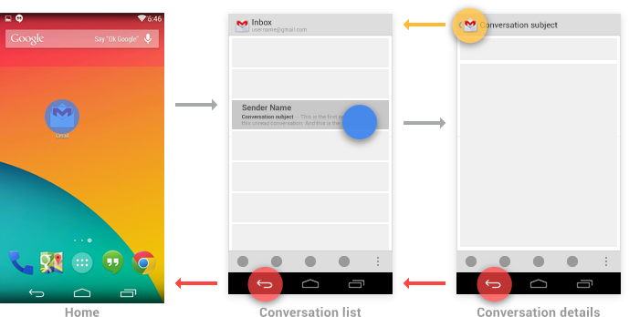
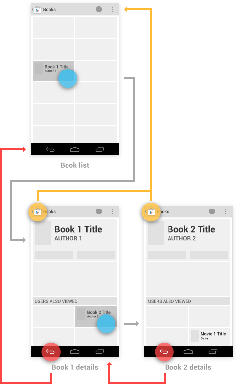
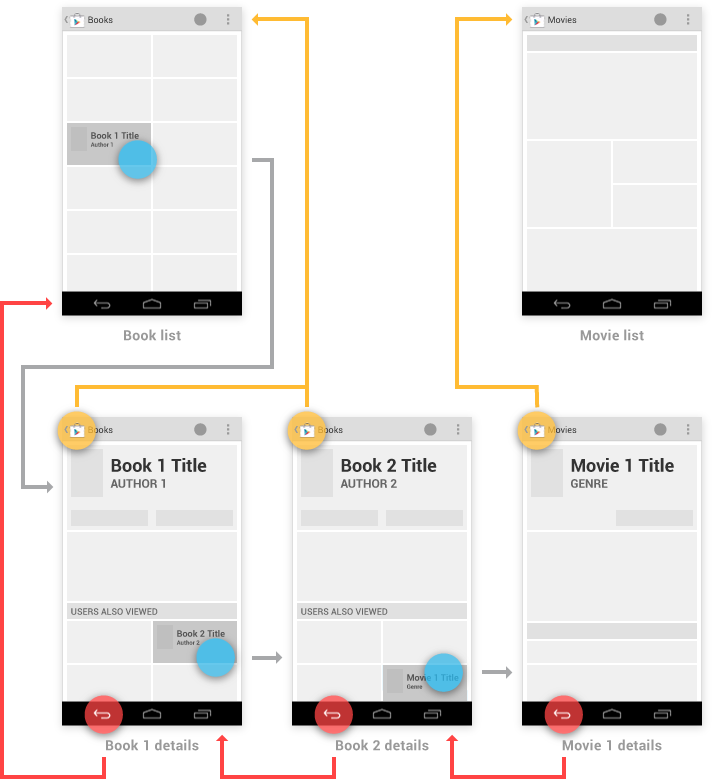
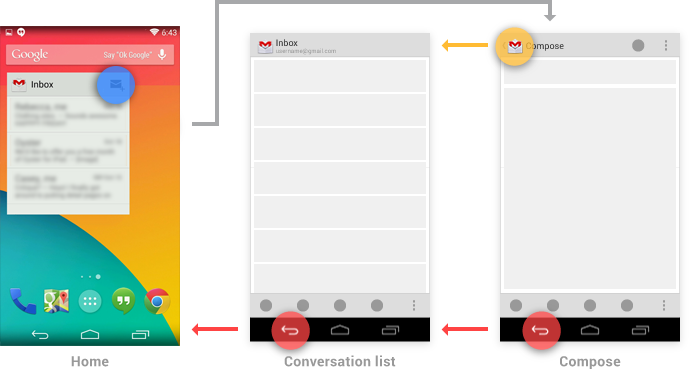
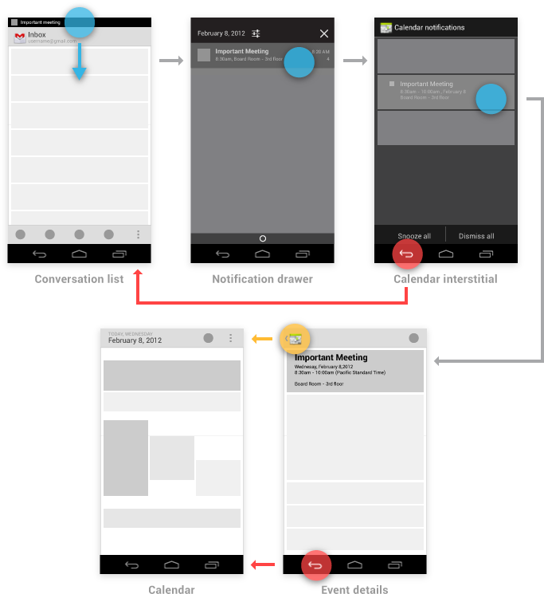
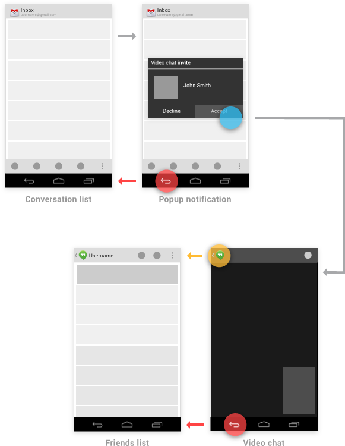
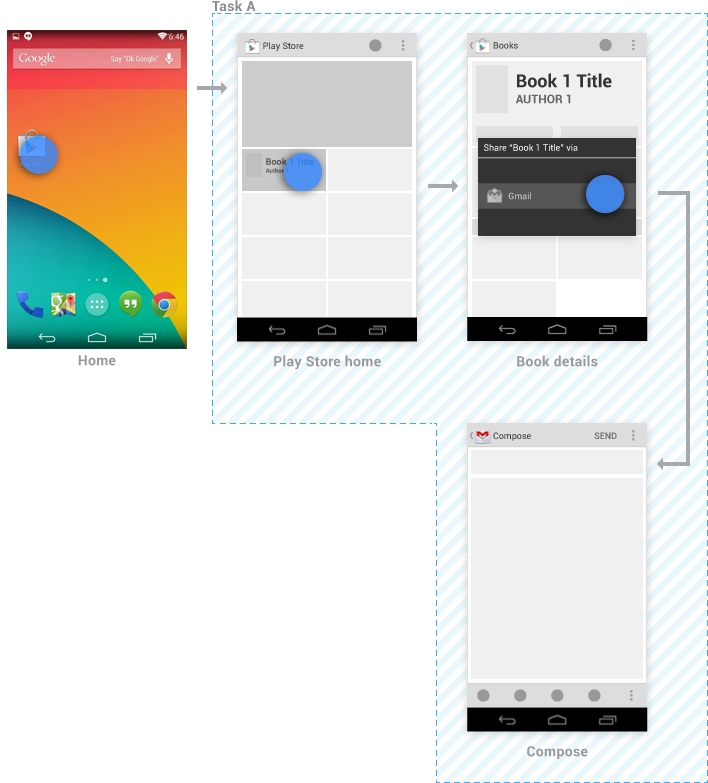
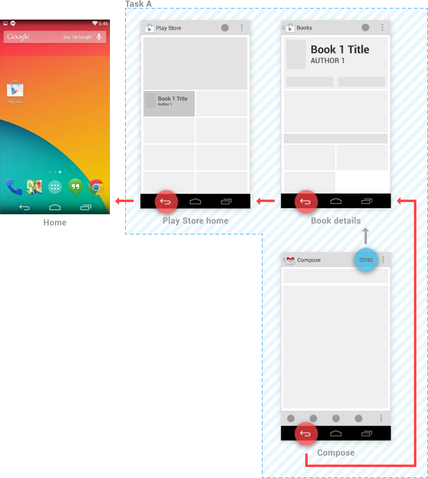
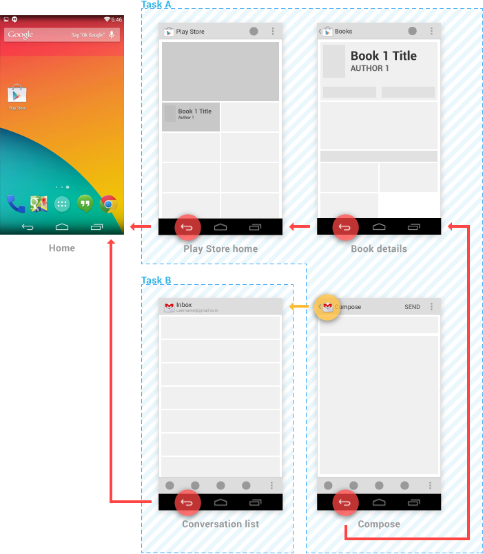

Developer Docs
Implementing Effective Navigation
Consistent navigation is an essential component of the overall user experience. Few things frustrate users more than basic navigation that behaves in inconsistent and unexpected ways. Android 3.0 introduced significant changes to the global navigation behavior. Thoughtfully following the guidelines for Back and Up will make your app's navigation predictable and reliable for your users.
Android 2.3 and earlier relied upon the system Back button for supporting navigation within an app. With the introduction of action bars in Android 3.0, a second navigation mechanism appeared: the Up button, consisting of the app icon and a left-point caret.
Up vs. Back
The Up button is used to navigate within an app based on the hierarchical relationships between screens. For instance, if screen A displays a list of items, and selecting an item leads to screen B (which presents that item in more detail), then screen B should offer an Up button that returns to screen A.
If a screen is the topmost one in an app (that is, the app's home), it should not present an Up button.
The system Back button is used to navigate, in reverse chronological order, through the history of screens the user has recently worked with. It is generally based on the temporal relationships between screens, rather than the app's hierarchy.
When the previously viewed screen is also the hierarchical parent of the current screen, pressing the Back button has the same result as pressing an Up button—this is a common occurrence. However, unlike the Up button, which ensures the user remains within your app, the Back button can return the user to the Home screen, or even to a different app.
The Back button also supports a few behaviors not directly tied to screen-to-screen navigation:
- Dismisses floating windows (dialogs, popups)
- Dismisses contextual action bars, and removes the highlight from the selected items
- Hides the onscreen keyboard (IME)
Navigation Within Your App
Navigating to screens with multiple entry points
Sometimes a screen doesn't have a strict position within the app's hierarchy, and can be reached from multiple entry points—such as a settings screen that can be reached from any other screen in your app. In this case, the Up button should choose to return to the referring screen, behaving identically to Back.
Changing view within a screen
Changing view options for a screen does not change the behavior of Up or Back: the screen is still in the same place within the app's hierarchy, and no new navigation history is created.
Examples of such view changes are:
- Switching views using tabs and/or left-and-right swipes
- Switching views using a dropdown (aka collapsed tabs)
- Filtering a list
- Sorting a list
- Changing display characteristics (such as zooming)
Navigating between sibling screens
When your app supports navigation from a list of items to a detail view of one of those items, it's often desirable to support direction navigation from that item to another one which precedes or follows it in the list. For example, in Gmail, it's easy to swipe left or right from a conversation to view a newer or older one in the same Inbox. Just as when changing view within a screen, such navigation does not change the behavior of Up or Back.

However, a notable exception to this occurs when browsing between related detail views not tied together by the referring list—for example, when browsing in the Play Store between apps from the same developer, or albums by the same artist. In these cases, following each link does create history, causing the Back button to step through each previously viewed screen. Up should continue to bypass these related screens and navigate to the most recently viewed container screen.
You have the ability to make the Up behavior even smarter based on your knowledge of detail view. Extending the Play Store example from above, imagine the user has navigated from the last Book viewed to the details for the Movie adaptation. In that case, Up can return to a container (Movies) which the user hasn't previously navigated through.
Navigation into Your App via Home Screen Widgets and Notifications
You can use Home screen widgets or notifications to help your users navigate directly to screens deep within your app's hierarchy. For example, Gmail's Inbox widget and new message notification can both bypass the Inbox screen, taking the user directly to a conversation view.
For both of these cases, handle the Up button as follows:
- If the destination screen is typically reached from one particular screen within your app, Up should navigate to that screen.
- Otherwise, Up should navigate to the topmost ("Home") screen of your app.
In the case of the Back button, you should make navigation more predictable by inserting into the task's back stack the complete upward navigation path to the app's topmost screen. This allows users who've forgotten how they entered your app to navigate to the app's topmost screen before exiting.
As an example, Gmail's Home screen widget has a button for diving directly to its compose screen. Up or Back from the compose screen would take the user to the Inbox, and from there the Back button continues to Home.
Indirect notifications
When your app needs to present information about multiple events simultaneously, it can use a single notification that directs the user to an interstitial screen. This screen summarizes these events, and provides paths for the user to dive deeply into the app. Notifications of this style are called indirect notifications.
Unlike standard (direct) notifications, pressing Back from an indirect notification's interstitial screen returns the user to the point the notification was triggered from—no additional screens are inserted into the back stack. Once the user proceeds into the app from its interstitial screen, Up and Back behave as for standard notifications, as described above: navigating within the app rather than returning to the interstitial.
For example, suppose a user in Gmail receives an indirect notification from Calendar. Touching this notification opens the interstitial screen, which displays reminders for several different events. Touching Back from the interstitial returns the user to Gmail. Touching on a particular event takes the user away from the interstitial and into the full Calendar app to display details of the event. From the event details, Up and Back navigate to the top-level view of Calendar.
Pop-up notifications
Pop-up notifications bypass the notification drawer, instead appearing directly in front of the user. They are rarely used, and should be reserved for occasions where a timely response is required and the interruption of the user's context is necessary. For example, Talk uses this style to alert the user of an invitation from a friend to join a video chat, as this invitation will automatically expire after a few seconds.
In terms of navigation behavior, pop-up notifications closely follow the behavior of an indirect notification's interstitial screen. Back dismisses the pop-up notification. If the user navigates from the pop-up into the notifying app, Up and Back follow the rules for standard notifications, navigating within the app.
Navigation Between Apps
One of the fundamental strengths of the Android system is the ability for apps to activate each other, giving the user the ability to navigate directly from one app into another. For example, an app that needs to capture a photo can activate the Camera app, which will return the photo to the referring app. This is a tremendous benefit to both the developer, who can easily leverage code from other apps, and the user, who enjoys a consistent experience for commonly performed actions.
To understand app-to-app navigation, it's important to understand the Android framework behavior discussed below.
Activities, tasks, and intents
In Android, an activity is an application component that defines a screen of information and all of the associated actions the user can perform. Your app is a collection of activities, consisting of both the activities you create and those you re-use from other apps.
A task is the sequence of activities a user follows to accomplish a goal. A single task can make use of activities from just one app, or may draw on activities from a number of different apps.
An intent is a mechanism for one app to signal it would like another app's assistance in performing an action. An app's activities can indicate which intents they can respond to. For common intents such as "Share", the user may have many apps installed that can fulfill that request.
Example: navigating between apps to support sharing
To understand how activities, tasks, and intents work together, consider how one app allows users to share content by using another app. For example, launching the Play Store app from Home begins new Task A (see figure below). After navigating through the Play Store and touching a promoted book to see its details, the user remains in the same task, extending it by adding activities. Triggering the Share action prompts the user with a dialog listing each of the activities (from different apps) which have registered to handle the Share intent.
When the user elects to share via Gmail, Gmail's compose activity is added as a continuation of Task A—no new task is created. If Gmail had its own task running in the background, it would be unaffected.
From the compose activity, sending the message or touching the Back button returns the user to the book details activity. Subsequent touches of Back continue to navigate back through the Play Store, ultimately arriving at Home.
However, by touching Up from the compose activity, the user indicates a desire to remain within Gmail. Gmail's conversation list activity appears, and a new Task B is created for it. New tasks are always rooted to Home, so touching Back from the conversation list returns there.
Task A persists in the background, and the user may return to it later (for example, via the Recents screen). If Gmail already had its own task running in the background, it would be replaced with Task B—the prior context is abandoned in favor of the user's new goal.
When your app registers to handle intents with an activity deep within the app's hierarchy, refer to Navigation into Your App via Home Screen Widgets and Notifications for guidance on how to specify Up navigation.